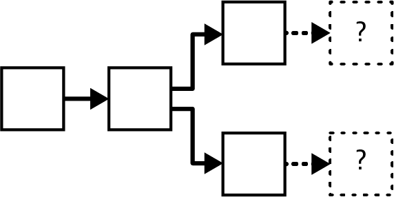
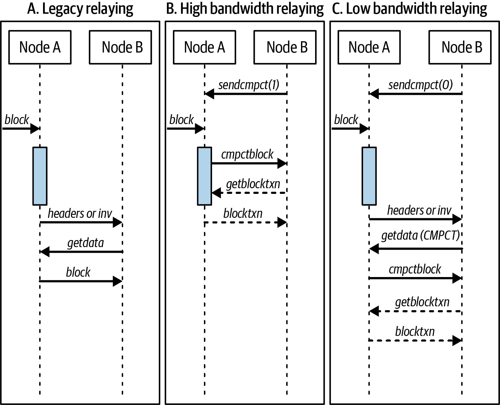
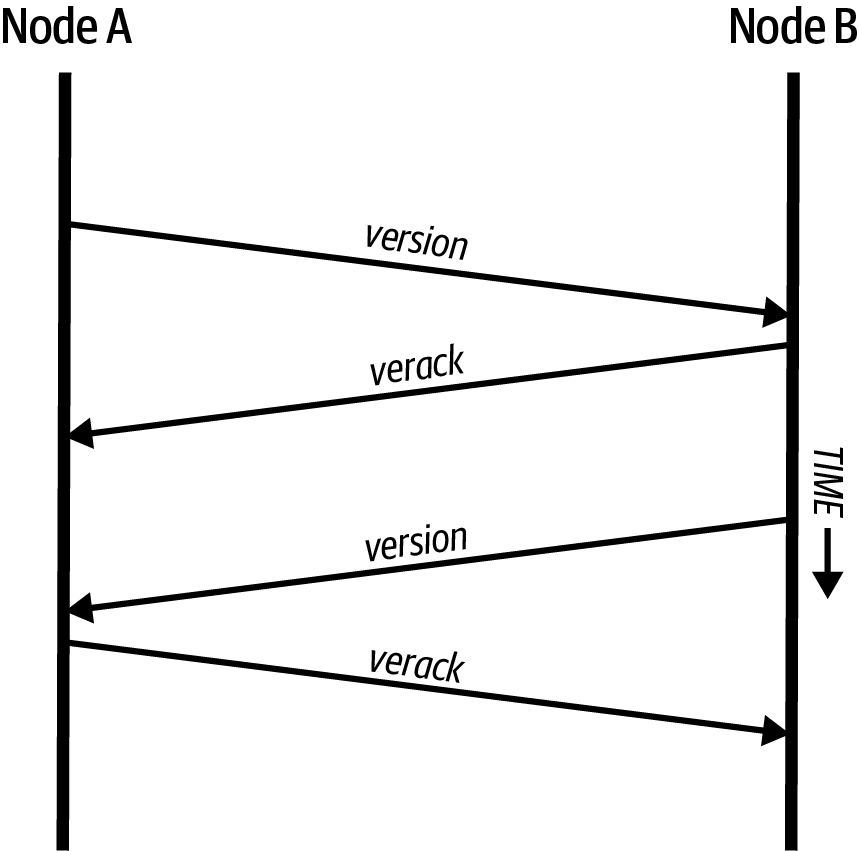
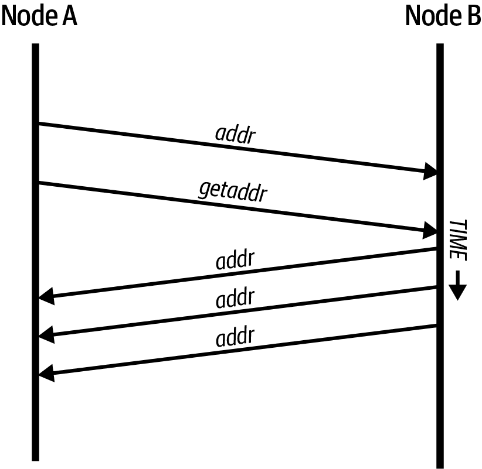
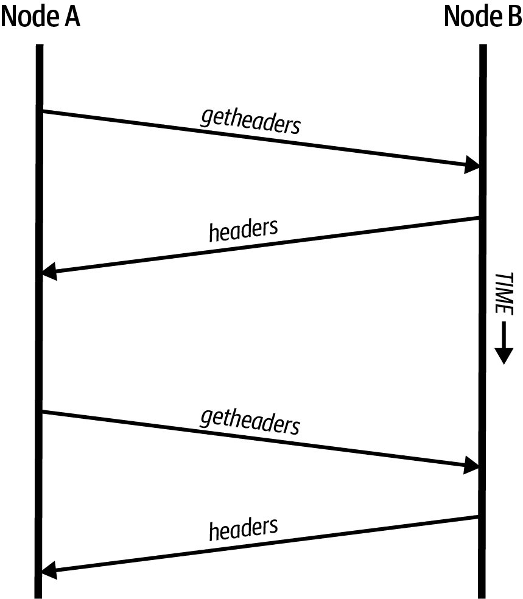
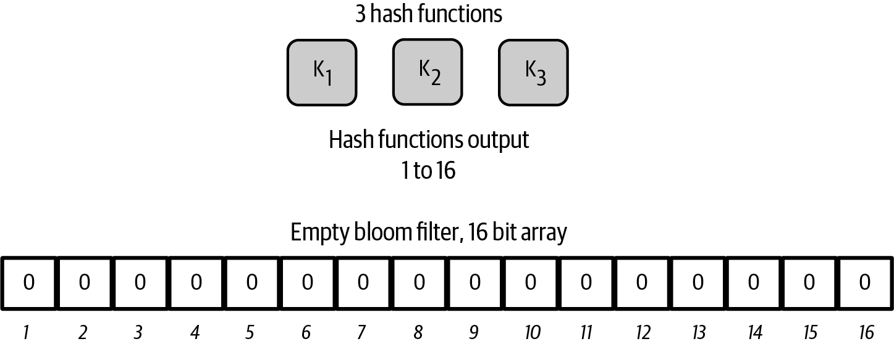
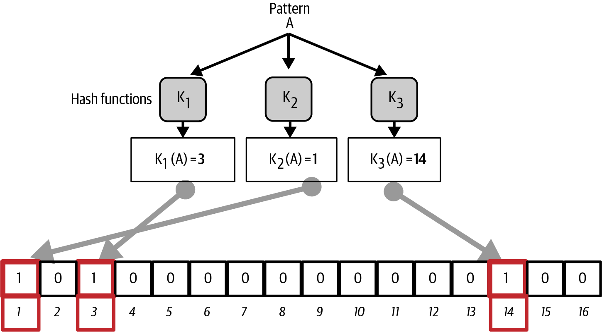
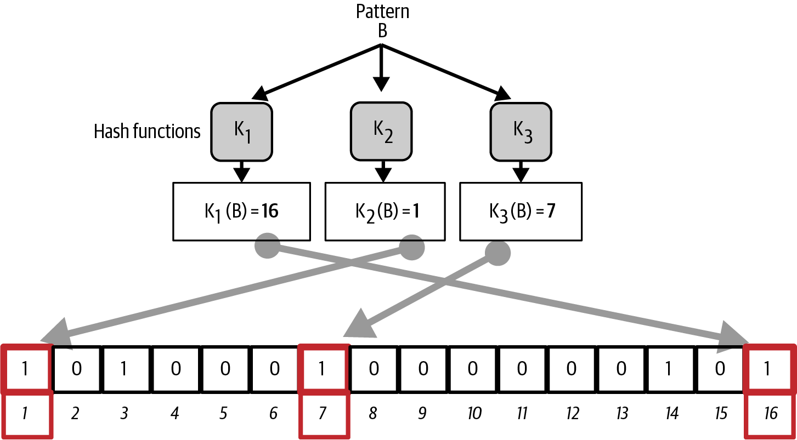
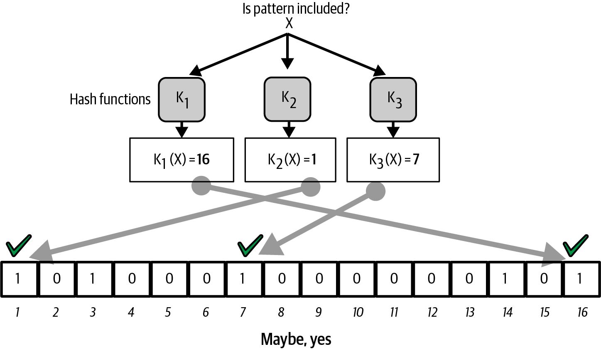
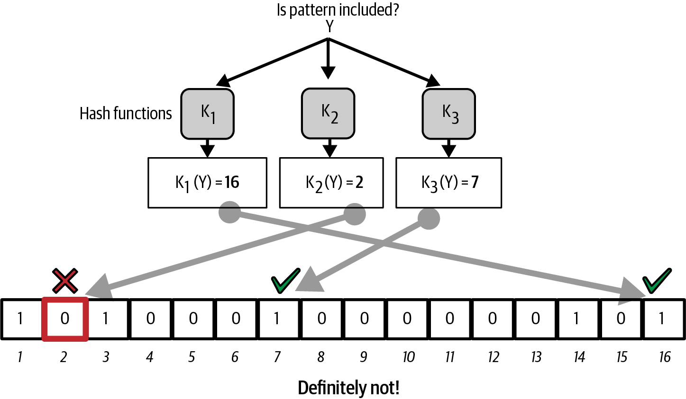

比特币网络
比特币以构建在互联网之上的对等网络（peer-to-peer network）架构进行组织。peer-to-peer，即 P2P，意味着参与网络的全节点彼此之间互为对等节点，它们都可以执行相同的功能，并且不存在"特殊"节点。网络中的节点以"扁平"拓扑互联成网状网络。网络内部没有服务器，没有中心化服务，也没有层级关系。P2P 网络中的节点同时既是服务的提供方又是服务的消费方。P2P 网络天生具备弹性、去中心化和开放性。P2P 网络架构的一个杰出范例就是早期的互联网本身，那时 IP 网络上的各个节点彼此对等。今天的互联网架构变得更具层级性，但 IP 协议依然保留了其扁平拓扑的本质。除了比特币和互联网之外，P2P 技术规模最大、最成功的应用就是文件共享，Napster 是先驱，BitTorrent 则是该架构最近期的演进形态。
比特币的 P2P 网络架构远不止是一种拓扑选择。比特币在设计上本就是一套 P2P 的电子现金系统，网络架构既是这一核心特征的体现，也是其根基。控制权的去中心化是核心设计原则，而它只能通过扁平、去中心化的 P2P 共识网络才能实现并维持。
"比特币网络"一词指的是运行比特币 P2P 协议的节点集合。除了比特币 P2P 协议外，还有一些用于挖矿和轻钱包的其他协议。这些附加协议由网关路由服务器提供，它们用比特币 P2P 协议接入比特币网络，再将网络扩展到运行其他协议的节点。例如，Stratum 服务器通过 Stratum 协议把 Stratum 挖矿节点连接到主比特币网络，并在 Stratum 协议与比特币 P2P 协议之间架起桥梁。本章除了介绍基础的比特币 P2P 协议外，还将描述其中几种最常用的协议。
节点类型与角色
尽管比特币 P2P 网络中的全节点（对等节点）地位平等，但它们可能根据所支持的功能承担不同角色。一个比特币全节点会验证区块，还可能包含其他功能，比如路由、挖矿和钱包服务。
某些节点称为 归档全节点（archival full nodes），会维护一份完整且最新的区块链副本。这些节点可以向只存储区块链部分子集的客户端提供数据，这些客户端使用一种名为 简化支付验证（simplified payment verification，SPV） 的方法来部分校验交易。这类客户端被称为轻量级客户端（lightweight clients）。
矿工通过运行专用硬件求解工作量证明算法来竞争创建新区块。一些矿工运行全节点，验证区块链上的每一个区块；另一些则作为客户端参与矿池挖矿，依赖矿池服务器为其分发工作。
用户钱包可能会连接到用户自己的全节点，桌面版比特币客户端有时就是这样；但许多用户钱包，尤其是运行在智能手机等资源受限设备上的，是轻量级节点。
除了比特币 P2P 协议上的主要节点类型外，还存在运行其他协议的服务器和节点，例如专用矿池协议和轻量级客户端访问协议。
网络
截至本文撰写时，运行比特币 P2P 协议的比特币主网约有 10,000 个监听节点运行着各种版本的 Bitcoin Core，另有几百个节点运行其他比特币 P2P 协议实现，如 BitcoinJ、btcd 和 bcoin。比特币 P2P 网络中有一小部分节点同时也是挖矿节点。各类个人和公司通过运行归档全节点接入比特币网络，这类节点保有完整的区块链副本以及网络节点功能，但不参与挖矿或提供钱包功能。这些节点扮演网络边缘路由器（network edge routers）的角色，使各种其他服务（交易所、钱包、区块浏览器、商户支付处理）可以在其上构建。
Compact Block Relay（紧凑区块中继）
当一个矿工找到新区块时，他们会向比特币网络（包括其他矿工）广播这一区块。找到该区块的矿工可以立即开始在它之上继续构建；所有其他还未得知该区块的矿工会继续在前一个区块之上构建，直到他们获知新区块为止。
如果在得知新区块之前，其他矿工中的某一位也产出了一个区块，那么他的区块就会与第一个矿工的新区块形成竞争。两个区块中最终只会有一个被纳入所有全节点共同采用的区块链，而矿工只有在区块被广泛接受的情况下才能获得报酬。
哪一个区块先被其后继区块叠加上去，哪一个就获胜（除非又出现新的几乎并列的情况）。这就是所谓的 区块争夺战（block-finding race），如 需要进行挖矿竞赛的区块链分叉。 所示。区块争夺战对大矿工有利，因此与比特币去中心化的本质相悖。为了防止区块争夺战，让任何规模的矿工都能平等地参与到比特币挖矿这场抽奖中，尽可能缩短从某个矿工宣告新区块到其他矿工收到该区块之间的时间是极为有用的。

2015 年，Bitcoin Core 新增了一项名为 compact block relay（紧凑区块中继） 的功能（在 BIP152 中规范），它能够更快地传输新区块，同时使用更少的带宽。
作为背景：中继未确认交易的全节点也会把许多此类交易保留在自己的内存池（mempool，见 内存池与孤儿池）中。当其中部分交易被打包进新区块确认时，节点并不需要再收到这些交易的第二份副本。
紧凑区块允许对端不必重复发送已知的未确认交易，而是为每笔交易只发送一个 6 字节的短标识符。当你的节点收到带有一个或多个标识符的紧凑区块时，会检查自己的内存池查找这些交易，找到的话就直接使用。对于本地内存池里没有的交易，你的节点可以向对端请求一份副本。
反过来，如果远端对端认为你节点的内存池里没有出现在该区块中的某些交易，它可以在紧凑区块中附带这些交易的副本。例如，Bitcoin Core 总是会发送一个区块的 coinbase 交易。
如果远端对端能正确猜中你节点内存池里有哪些交易、缺哪些交易，它发送区块的效率将接近理论极限（对于一个典型区块，效率介于 97% 到 99% 之间）。
|
紧凑区块中继并不减小区块本身的大小。它只是避免重复传输节点已经拥有的信息。当节点先前没有某个区块的信息时（例如节点刚启动时），它仍必须接收每个区块的完整副本。 |
Bitcoin Core 当前实现了两种发送紧凑区块的模式，如 BIP152 两种模式对比（取自 BIP152）。阴影条表示节点校验区块所花的时间。 所示：
- 低带宽模式（Low-bandwidth mode）
-
当你的节点请求某对端使用低带宽模式（默认模式）时，对端会把新区块的 32 字节标识符（区块头哈希）告诉你的节点，但不会发送任何区块详情。如果你的节点先从其他来源获取到了该区块，这样就避免了再花带宽去取一份冗余副本。如果你的节点确实需要该区块，它会主动请求一个紧凑区块。
- 高带宽模式（High-bandwidth mode）
-
当你的节点请求某对端使用高带宽模式时，该对端会在尚未完全校验新区块有效性之前，就把对应的紧凑区块发给你的节点。对端唯一会做的校验是确认区块头中包含正确数量的工作量证明。由于生成工作量证明代价高昂（撰写本书时约 150,000 美元），矿工不太可能仅仅为了浪费中继节点的带宽而伪造工作量证明。在中继前跳过校验可以让新区块在网络中传播时每跳延迟都最小化。
高带宽模式的不利之处在于：你的节点很可能从它选中的每个高带宽对端处都收到一份冗余信息。撰写本书时，Bitcoin Core 只会请求三个对端使用高带宽模式（且会尽量挑选那些在过去能快速广播区块的对端）。

这两种方法的命名（取自 BIP152）可能略有迷惑性。低带宽模式之所以省带宽，是因为大多数情况下根本不发送区块。高带宽模式比低带宽模式用的带宽多，但在大多数情况下，比紧凑区块出现之前的区块中继方式所用的带宽要少得多。
私有区块中继网络
虽然紧凑区块在缩短区块在网络中传播所需时间方面已经做得相当好，但延迟还可以进一步降低。然而，与紧凑区块不同，其他解决方案涉及权衡取舍，使其在公共 P2P 中继网络上无法使用或不适用。出于这个原因，业界一直在尝试用于区块的私有中继网络。
一种简单的技术是在端点之间预选路径。例如，一个把服务器部署在主要跨洋光纤线路附近数据中心的中继网络，可能比等待区块到达距离光纤线路数千公里之外的某个家庭用户节点更快地转发新区块。
另一种更复杂的技术是前向纠错（Forward Error Correction，FEC）。它允许把一个紧凑区块消息拆成若干部分，每部分都附加额外数据。如果其中任何一部分没收到，可以从已收到的部分重建出该部分。根据设置，最多可以重建若干个丢失的部分。
FEC 解决了紧凑区块（或其某些部分）因底层网络连接问题而未能到达的问题。这类问题经常发生，但我们往往察觉不到，因为我们大多使用会自动重新请求缺失数据的协议。然而，重新请求缺失数据会让接收时间变成原来的三倍。例如：
-
Alice 向 Bob 发送一些数据。
-
Bob 没收到数据（或数据已损坏）。Bob 向 Alice 重新请求这部分数据。
-
Alice 再次发送这部分数据。
第三种技术是假设所有接收数据的节点在自己的内存池中几乎都有相同的交易，因此它们可以接受相同的紧凑区块。这不仅节省了在每一跳重新计算紧凑区块的时间，还意味着每一跳甚至可以在尚未校验之前就把 FEC 数据包转发给下一跳。
上述每种方法的权衡是：它们在中心化的环境下工作良好，但在节点之间无法互信的去中心化网络中并不适用。数据中心里的服务器要花钱，而且经常可以被数据中心的运营者访问，因而比一台安全的家用电脑可信度更低。在校验之前就转发数据很容易浪费带宽，因此只能合理地在私有网络中使用，那里各方之间存在一定程度的信任和问责。
最初的 比特币中继网络（Bitcoin Relay Network） 是由开发者 Matt Corallo 于 2015 年创建的，旨在让矿工之间以极低延迟快速同步区块。该网络由托管在世界各地基础设施上的若干虚拟专用服务器（VPS）组成，连接了大多数矿工和矿池。
最初的 Bitcoin Relay Network 在 2016 年被取代，引入了 Fast Internet Bitcoin Relay Engine，即 FIBRE，同样由 Matt Corallo 创建。FIBRE 是一款软件，允许运行基于 UDP 的中继网络，在一组节点之间中继区块。FIBRE 实现了 FEC 和 compact block 优化，以进一步减少传输的数据量和网络延迟。
网络发现
当一个新节点启动时，它必须先发现网络上的其他比特币节点才能参与进来。要开始这个过程，新节点必须至少发现网络中一个已存在的节点并与之连接。其他节点的地理位置无关紧要；比特币网络拓扑并不按地理位置定义。因此，任何已存在的比特币节点都可以随机选择。
要连接到一个已知对等节点，节点会建立 TCP 连接，通常连到 8333 端口（这是众所周知的比特币默认端口），或在指定时连到另一个端口。建立连接后，节点会通过发送一个 version 消息开始"握手"（见 对等节点之间的初始握手。），其中包含基本的标识信息，包括：
- Version
-
客户端"讲的"比特币 P2P 协议版本（如 70002）
- nLocalServices
-
该节点支持的本地服务列表
- nTime
-
当前时间
- addrYou
-
远端节点的 IP 地址，从本节点角度看到的
- addrMe
-
本地节点的 IP 地址，由本地节点自身发现的
- subver
-
子版本号，表明该节点运行的软件类型（如 /Satoshi:0.9.2.1/）
- BestHeight
-
该节点区块链的区块高度
- fRelay
-
由 BIP37 添加的字段，用于请求不接收未确认交易
version 消息总是任一对端发给另一对端的第一条消息。接收 version 消息的本地对端会检查远端对端报告的 Version，并判断远端对端是否兼容。如果远端对端兼容，本地对端会通过发送 verack 来确认 version 消息并建立连接。
新节点如何找到对等节点呢？第一种方法是查询若干 DNS 种子（DNS seeds），这是提供比特币节点 IP 地址列表的 DNS 服务器。其中一些 DNS 种子提供稳定比特币监听节点 IP 地址的静态列表。还有一些 DNS 种子是 BIND（Berkeley Internet Name Daemon）的自定义实现，它们会从一个由爬虫或长期运行的比特币节点收集到的比特币节点地址列表中随机返回一个子集。Bitcoin Core 客户端内置了多个不同的 DNS 种子名称。不同 DNS 种子在所有权和实现上的多样性为初始自举过程提供了高度的可靠性。在 Bitcoin Core 客户端中，是否使用 DNS 种子由选项开关 -dnsseed 控制（默认设置为 1，即使用 DNS 种子）。
或者，对一个对网络一无所知的自举节点，必须给它至少一个比特币节点的 IP 地址，之后它就可以通过进一步的介绍建立其他连接。命令行参数 -seednode 可用于连接到一个节点，仅以它为种子进行介绍。在使用初始种子节点完成介绍后，客户端会与其断开连接，转而使用新发现的对等节点。

一旦建立了一个或多个连接，新节点会向邻居发送一个包含自身 IP 地址的 addr 消息。邻居们再依次把该 addr 消息转发给它们的邻居，从而确保新连入的节点被广为人知且连接得更好。此外，新连入的节点还可以向邻居发送 getaddr，请求它们返回其他对等节点的 IP 地址列表。这样，节点既能找到要连接的对等节点，又能在网络上广而告之自身的存在，便于其他节点找到它。地址传播与发现。 展示了地址发现协议。

节点必须连接到几个不同的对等节点，以建立通往比特币网络的多样化路径。路径并不可靠——节点来来去去——因此节点必须在失去旧连接的同时持续发现新节点，并在其他节点自举时给予协助。自举只需要一个连接，因为第一个节点可以介绍它的对等节点，那些对等节点又可以介绍更多的节点。连接到超过少数几个节点既不必要也是对网络资源的浪费。自举完成后，节点会记住它最近成功连接过的对等节点，这样如果它重启，可以很快重新与之前的对等网络建立连接。如果之前的对等节点都不响应连接请求，节点可以再次使用种子节点进行自举。
在运行 Bitcoin Core 客户端的节点上，你可以用 getpeerinfo 命令列出对等连接：
$ bitcoin-cli getpeerinfo[
{
"id": 0,
"addr": "82.64.116.5:8333",
"addrbind": "192.168.0.133:50564",
"addrlocal": "72.253.6.11:50564",
"network": "ipv4",
"services": "0000000000000409",
"servicesnames": [
"NETWORK",
"WITNESS",
"NETWORK_LIMITED"
],
"lastsend": 1683829947,
"lastrecv": 1683829989,
"last_transaction": 0,
"last_block": 1683829989,
"bytessent": 3558504,
"bytesrecv": 6016081,
"conntime": 1683647841,
"timeoffset": 0,
"pingtime": 0.204744,
"minping": 0.20337,
"version": 70016,
"subver": "/Satoshi:24.0.1/",
"inbound": false,
"bip152_hb_to": true,
"bip152_hb_from": false,
"startingheight": 788954,
"presynced_headers": -1,
"synced_headers": 789281,
"synced_blocks": 789281,
"inflight": [
],
"relaytxes": false,
"minfeefilter": 0.00000000,
"addr_relay_enabled": false,
"addr_processed": 0,
"addr_rate_limited": 0,
"permissions": [
],
"bytessent_per_msg": {
...
},
"bytesrecv_per_msg": {
...
},
"connection_type": "block-relay-only"
},
]要覆盖对等节点的自动管理并指定一份 IP 地址列表，用户可以提供选项 -connect=<IPAddress> 并指定一个或多个 IP 地址。如果使用此选项，节点将只连接到所选 IP 地址，而不会自动发现并维护对等连接。
如果连接上没有流量，节点会定期发送一条消息以维持连接。如果某个连接上节点长时间未通信，则会被认为已断开，节点将寻找新的对等节点。如此一来，网络会动态调整以适应短暂的节点和网络问题，并能在无需任何中心化控制的情况下有机地扩张和收缩。
全节点
全节点是会验证工作量证明最多的有效区块链上每个区块中每笔交易的节点。
全节点独立地处理每一个区块，从最初的区块（创世区块）之后开始，一路构建到网络中已知的最新区块。全节点可以独立且权威地校验任何交易。全节点依赖网络接收关于新交易区块的更新，然后对其进行校验并将其纳入本地视图中——这个视图描述哪些脚本控制着哪些比特币，称为 未花费交易输出（unspent transaction outputs，UTXOs） 集合。
运行全节点能让你获得纯正的比特币体验：独立校验所有交易，无需依赖或信任任何其他系统。
存在一些全节点的替代实现，它们使用不同的编程语言和软件架构构建，或在设计上做出了不同选择。然而最常见的实现是 Bitcoin Core。比特币网络上 95% 以上的全节点运行着各种版本的 Bitcoin Core。它在 version 消息发送的 subversion 字符串中标识为"Satoshi"，并如前面所示由 getpeerinfo 命令展示出来；例如 /Satoshi:24.0.1/。
交换"清单"（Inventory）
当一个全节点连接到对等节点后，它要做的第一件事就是尝试构建一条完整的区块头链。如果它是一个全新的节点，根本没有任何区块链，那么它只知道一个区块，也就是静态嵌入在客户端软件中的创世区块。从 #0 号区块（创世区块）之后开始，新节点必须下载数十万个区块才能与网络同步并重建完整的区块链。
同步区块链的过程从 version 消息开始，因为它包含 BestHeight——节点当前的区块链高度（区块数）。一个节点会查看其对等节点发来的 version 消息，知道它们各自有多少区块，并能与自己区块链中的区块数进行比较。配对的对端会交换 getheaders 消息，其中包含它们本地区块链顶端区块的哈希。其中一方会发现收到的哈希对应的是一个并非位于顶端的区块，而是属于较早的区块，由此推断出自己本地的区块链比远端节点的区块链更长。
拥有更长区块链的对端比另一方有更多的区块，它能识别出对方"赶上进度"所需的区块头。它会用一条 headers 消息分享头部的前 2,000 个区块头。该节点会持续请求更多区块头，直到收到了远端对端声称拥有的每个区块对应的区块头。
与此同时，节点会针对此前收到的每个区块头开始用 getdata 消息请求区块。节点会从每个选定的对等节点处请求不同的区块，这样可以丢弃那些速度明显慢于平均水平的对等节点连接，以便寻找更新（并可能更快）的对端。
例如，假设一个节点只有创世区块。它将收到对端发来的 headers 消息，包含链上接下来 2,000 个区块的头。它会向所有连接的对端请求区块，维护一个最多 1,024 个区块的队列。区块必须按顺序校验，所以如果队列中最旧的那个区块——即节点接下来要校验的区块——还没有收到，节点就会断开本该提供该区块的对端的连接。然后它会寻找一个新的对端，期望该对端能在节点其他所有对端提供完 1,023 个区块之前就提供这一个区块。
随着每个区块的接收，区块会被加入区块链中，正如我们将在 [blockchain] 中看到的那样。随着本地区块链逐步建立起来，会请求并接收更多区块，这一过程持续进行直到节点赶上网络其余部分。
每当节点离线一段较长时间后，这个把本地区块链与对等节点比较并取回缺失区块的过程都会再次发生。
轻量级客户端
许多比特币客户端被设计为运行在空间和电力受限的设备上，比如智能手机、平板或嵌入式系统。对于这类设备，采用 简化支付验证（simplified payment verification，SPV） 方法，让它们无需校验完整区块链即可运作。这类客户端被称为轻量级客户端。
轻量级客户端只下载区块头，不下载每个区块中包含的交易。最终得到的不含交易的区块头链比完整区块链小约 10,000 倍。轻量级客户端无法构建出所有可花费 UTXO 的完整图景，因为它们并不了解网络上所有的交易。相反，它们使用一种略有不同的方法来校验交易，这种方法依赖对等节点按需提供区块链中相关部分的局部视图。
打个比方，全节点就像一个身处陌生城市的游客，手里拿着一份详细标注了每条街道和每个门牌的地图。相比之下，轻量级客户端就像一个身处陌生城市的游客，只知道一条主干道，于是不断向陌生人逐路问询方向。虽然两位游客都能通过实地走访来验证一条街是否存在，但没地图的游客并不知道任何小巷里有什么，也不知道还存在哪些其他街道。站在"Church Street 23 号"门口，没地图的游客无从得知整座城市里是否还有十几个[.keep-together]"Church Street 23 号"地址，以及眼前这个是不是要找的那个。这位没地图的游客最好的办法就是问足够多的人，然后期望其中一些人不是要打劫他。
轻量级客户端通过引用交易在区块链中的 深度（depth） 来校验交易。全节点会构建一条经过完全校验的、由成千上万区块和数百万交易构成的链，一路追溯到（在时间上回到）创世区块；而轻量级客户端会校验所有区块的工作量证明（但不校验区块及其所有交易是否有效），并把那条链与所关心的交易关联起来。
例如，在检查第 800,000 个区块中的某笔交易时，全节点会校验向下追溯到创世区块的全部 800,000 个区块，构建出完整的 UTXO 数据库，通过确认该交易存在且其输出仍未被花费来确立该交易的有效性。而轻量级客户端只能校验该交易存在。客户端使用 merkle 路径（见 [merkle_trees]）在该交易与包含它的区块之间建立联系。然后，轻量级客户端等到看到 800,001 到 800,006 这六个区块叠加在包含该交易的区块之上，再通过它在 800,006 到 800,001 这些区块之下的深度来对其加以校验。网络上其他节点接受了 800,000 号区块、矿工又做了必要的工作在其上产出六个区块，这一事实就是该交易确实存在的间接证明。
通常无法说服轻量级客户端相信某个实际并不存在的交易出现在某个区块中。轻量级客户端通过请求 merkle 路径证明并校验区块链中工作量证明，来确立某笔交易在区块中的存在。然而，某笔交易的存在却可以对轻量级客户端"隐藏"起来。轻量级客户端能够确定地验证某笔交易存在，但因为它没有所有交易的记录，所以无法验证某笔交易不存在，例如同一 UTXO 的双花交易。这一脆弱性可被用于针对轻量级客户端的拒绝服务攻击或双花攻击。为防范这一点，轻量级客户端需要随机连接到多个客户端，以提升至少接触到一个诚实节点的概率。这种必须随机连接的需求意味着轻量级客户端也容易受到网络分区攻击或女巫（Sybil）攻击，它们可能会被连到伪造的节点或伪造的网络上，无法访问诚实节点或真实的比特币网络。
对许多实际用途而言，连接良好的轻量级客户端已经足够安全，能在资源需求、实用性和安全性之间取得平衡。但要追求万无一失的安全性，没什么能比得上运行一个全节点。
|
全节点通过检查某笔交易下方成千上万区块构成的整条链来校验该交易，以保证 UTXO 存在且未被花费；而轻量级客户端只证明某笔交易存在，并检查包含该交易的区块上方已经堆叠了几个区块。 |
为了获取校验某笔交易属于链上所需的区块头，轻量级客户端使用 getheaders 消息。响应的对端会用一条 headers 消息发送多达 2,000 个区块头。请看 轻量级客户端同步区块头。 中的示意图。

区块头允许轻量级客户端验证某个独立区块是否属于工作量证明最多的那条区块链，但并不能告诉客户端哪些区块包含与其钱包相关的交易。客户端可以下载每个区块再逐一检查，但那将耗费运行全节点所需资源的相当大一部分，因此开发者们寻找其他方法来解决这一问题。
在轻量级客户端引入不久后，比特币开发者添加了一项称为 bloom filter（布隆过滤器） 的功能，试图减少轻量级客户端为获知自己收到和发出的交易而需要消耗的带宽。布隆过滤器通过一种使用概率而非固定模式的过滤机制，让轻量级客户端能够接收交易的一个子集，而不直接暴露它们到底关心哪些地址。
布隆过滤器（Bloom Filters）
布隆过滤器是一种概率性搜索过滤器，可以描述某种期望的模式而不必精确指定它。布隆过滤器提供了一种在保护隐私的同时高效表达搜索模式的方法。轻量级客户端用它向对等节点请求匹配某种特定模式的交易，而不暴露它们到底在搜索哪些具体的地址、密钥或交易。
在我们之前的比喻中，一位没地图的游客在打听如何走到一个具体的地址"Church St. 23 号"。如果他向陌生人询问去这条街的路，就在无意中暴露了自己的目的地。布隆过滤器就像问："这一带有没有名字以 R-C-H 结尾的街道？"这样的问题比直接问"Church St. 23 号"略微少暴露一些目的地信息。利用这种技术，游客可以更精确地描述目标地址，比如"以 U-R-C-H 结尾"，也可以更模糊地描述，比如"以 H 结尾"。通过变化搜索的精度，游客以得到更具体或更不具体的结果为代价，泄露更多或更少的信息。如果他问一个不太具体的模式，会得到更多可能的地址、隐私更好，但许多结果并不相关。如果他问一个非常具体的模式，结果会更少但失去了隐私。
布隆过滤器以同样的方式发挥作用：它允许轻量级客户端为交易指定一个可以在精度和隐私之间调节的搜索模式。更具体的布隆过滤器会得到准确的结果，但代价是暴露轻量级客户端关心哪些模式，从而暴露用户钱包所拥有的地址。更不具体的布隆过滤器会带来更多交易的数据，其中许多与客户端无关，但允许客户端保持更好的隐私。
布隆过滤器的工作原理
布隆过滤器实现为一个长度为 N 的可变大小二进制数字数组（位字段），并配合 M 个数量可变的哈希函数。这些哈希函数被设计为始终生成 1 到 N 之间的输出，对应那个二进制数字数组。哈希函数以确定性方式生成，因此任何实现布隆过滤器的客户端总会使用相同的哈希函数，并对相同输入得到相同结果。通过选择不同长度（N）的布隆过滤器和不同数量（M）的哈希函数，可以对布隆过滤器进行调节，从而改变精度因而也改变隐私级别。
在 一个简化版布隆过滤器示例，含 16 位字段和三个哈希函数。 中，我们用一个非常小的 16 位数组和三个哈希函数来展示布隆过滤器的工作原理。

布隆过滤器初始化时位数组全为 0。要向布隆过滤器加入一个模式，依次用每个哈希函数对该模式进行哈希。对输入应用第一个哈希函数会得到 1 到 N 之间的一个数字。在数组中（索引从 1 到 N）找到对应的位并将其置为 1，从而记录下该哈希函数的输出。然后用下一个哈希函数置另一位，依此类推。一旦应用完所有 M 个哈希函数，搜索模式将被"记录"在布隆过滤器中，表现为 M 个被从 0 改为 1 的位。
向我们的简单布隆过滤器加入模式"A"。 是把模式"A"加入 一个简化版布隆过滤器示例，含 16 位字段和三个哈希函数。 中所示的简单布隆过滤器的示例。
加入第二个模式只需重复这一过程。模式依次用每个哈希函数哈希，结果通过将相应位置 1 来记录。请注意，随着布隆过滤器被加入越来越多模式，某个哈希函数的结果可能正好对应一个已经被置为 1 的位，此时该位不发生变化。本质上，随着越来越多模式记录到重叠的位上，布隆过滤器逐渐被填满，越来越多的位被置为 1，过滤器的准确性下降。这就是为什么过滤器是一种概率性数据结构——随着模式增加它会变得不那么准确。准确度取决于加入的模式数量与位数组大小（N）以及哈希函数数量（M）。更大的位数组和更多的哈希函数可以以更高的准确度记录更多模式。更小的位数组或更少的哈希函数则记录的模式更少，准确度也更低。

向我们的简单布隆过滤器加入第二个模式"B"。 是把第二个模式"B"加入同一个简单布隆过滤器的示例。

要测试某个模式是否属于布隆过滤器，需要用每个哈希函数对该模式进行哈希，并将得到的位模式与位数组比对。如果哈希函数索引到的所有位都被置为 1，则该模式 可能 已被记录在布隆过滤器中。由于这些位可能是由于多个模式的重叠而被置 1 的，答案并不是确定的，而是概率性的。简单来说，布隆过滤器的正向匹配表示"也许，是。"
测试模式"X"是否存在于布隆过滤器中。结果是概率性的正向匹配，意味着"也许。" 是测试模式"X"是否存在于简单布隆过滤器中的示例。相应的位都被置为 1，所以该模式可能匹配。

反之，如果对某个模式做测试时，发现其中任一位被置为 0，则可以证明该模式没有被记录到布隆过滤器中。负向结果不是概率，而是确定性的。简单来说，布隆过滤器的负向匹配表示"绝对没有！"
测试模式"Y"是否存在于布隆过滤器中。结果是确定的负向匹配，意味着"绝对没有！" 是测试模式"Y"是否存在于简单布隆过滤器中的示例。其中一个对应位被置为 0，所以该模式确定不匹配。

轻量级客户端如何使用布隆过滤器
布隆过滤器用于过滤轻量级客户端从其对等节点接收的交易（及包含它们的区块），只选取客户端感兴趣的交易，而不暴露它具体关心哪些地址或密钥。
轻量级客户端会先把布隆过滤器初始化为"空"；这种状态下，布隆过滤器不会匹配任何模式。然后，轻量级客户端会列出它感兴趣的所有地址、密钥和哈希。它通过从钱包控制的每个 UTXO 中提取公钥哈希、脚本哈希和交易 ID 来完成这一步。轻量级客户端再将这些一一加入布隆过滤器，使得当这些模式出现在交易中时布隆过滤器会"匹配"，而又不暴露这些模式本身。
随后，轻量级客户端会向对端发送一个 filterload 消息，附带要在该连接上使用的布隆过滤器。在对端，每收到一笔交易就会用布隆过滤器进行核对。全节点会针对该交易的多个部分与布隆过滤器进行匹配，包括：
- 交易 ID
- 每个交易输出脚本中的数据组成部分（脚本中每一个键和哈希）
- 每个交易输入
- 每个输入签名的数据组成部分（或见证脚本）
通过对所有这些组成部分进行核对，布隆过滤器可以用于匹配公钥哈希、脚本、OP_RETURN 数值、签名中的公钥，乃至将来智能合约或复杂脚本的任意组成部分。
过滤器建立后，对端会针对每笔交易的输出与布隆过滤器进行比对。只有匹配过滤器的交易才会发送给客户端。
响应客户端的 getdata 消息时，对等节点会发送 merkleblock 消息，只包含匹配该过滤器的区块的区块头以及每笔匹配交易的 merkle 路径（见 [merkle_trees]）。然后对等节点还会发送 tx 消息，包含被过滤器匹配到的那些交易。
随着全节点把交易发送给轻量级客户端，轻量级客户端会丢弃所有误报，并使用正确匹配的交易更新其 UTXO 集和钱包余额。在更新自己对 UTXO 集的视图时，它也会修改布隆过滤器，以匹配未来任何引用它新发现的 UTXO 的交易。全节点随后用新的布隆过滤器匹配新交易，整个过程不断重复。
设置布隆过滤器的客户端可以通过发送 filteradd 消息以交互方式向过滤器添加模式。要清空布隆过滤器，客户端可以发送 filterclear 消息。因为无法从布隆过滤器中移除某个模式，所以如果某个模式不再需要，客户端必须清空并重新发送一个新的布隆过滤器。
针对轻量级客户端的网络协议和布隆过滤器机制在 BIP37 中定义。
不幸的是，在布隆过滤器部署后，人们逐渐意识到它并没有提供多少隐私。一个收到对端布隆过滤器的全节点可以把该过滤器应用于整个区块链，找出该客户端的所有交易（外加误报）。然后它可以寻找这些交易之间的模式和关联。随机选择的误报交易之间不太可能在输出到输入之间存在父子关系，而用户钱包中的交易则非常可能存在这种关系。如果所有相关交易都具有某些特征，例如至少有一个 P2PKH 输出，那么没有这种特征的交易就可以被认为不属于该钱包。
人们还发现，特别构造的过滤器可能迫使处理它们的全节点执行大量工作，从而可能导致拒绝服务攻击。
由于上述两个原因，Bitcoin Core 最终把对布隆过滤器的支持限制为仅对节点运营者明确允许的 IP 地址上的客户端开放。这意味着需要另一种帮助轻量级客户端找到其交易的方法。
紧凑区块过滤器（Compact Block Filters）
2016 年，一位匿名开发者在Bitcoin-Dev 邮件列表上发布了一个把布隆过滤器流程反过来的想法。在 BIP37 布隆过滤器中，每个客户端把自己的地址进行哈希以生成布隆过滤器，节点对每笔交易的若干部分做哈希以尝试匹配该过滤器。在这个新提案中，节点对一个区块中每笔交易的若干部分做哈希以生成一个布隆过滤器，而客户端对自己的地址做哈希以尝试匹配该过滤器。如果客户端发现匹配，它就下载整个区块。
|
尽管名字相似，BIP152 compact blocks（紧凑区块）和 BIP157/158 compact block filters（紧凑区块过滤器）之间并无关联。 |
这种方式让节点可以为每个区块生成单一过滤器，将其保存在磁盘上并反复提供，从而消除了 BIP37 的拒绝服务漏洞。客户端不向全节点透露关于自己过去或将来地址的任何信息。它们只下载区块，这些区块中可能包含成千上万笔并非由该客户端创建的交易。它们甚至可以从不同的对等节点下载不同的匹配区块，使全节点更难在多个区块间把属于单一客户端的交易关联起来。
这个由服务器生成过滤器的想法并不提供完美隐私；它仍给全节点带来一些成本（同时也要求轻量级客户端在下载区块上使用更多带宽），并且过滤器只能用于已确认交易（不能用于未确认交易）。但相对于 BIP37 的客户端请求型布隆过滤器，它的隐私性和可靠性要好得多。
在描述了最初基于布隆过滤器的想法之后，开发者们意识到对于服务器生成过滤器存在更好的数据结构，叫作 Golomb-Rice 编码集（Golomb-Rice Coded Sets，GCS）。
Golomb-Rice 编码集（GCS）
想象Alice 想把一份数字列表发给 Bob。最简单的方法就是直接把整份列表发给他：
849 653 476 900 379
但还有一种更高效的方法。首先，Alice 把列表按数值大小排序：
379 476 653 849 900
然后，Alice 发送第一个数字。对于剩下的数字，她发送的是该数字与前一个数字之差。例如，对于第二个数字，她发送 97（476 – 379）；对于第三个数字，她发送 177（653 – 476）；以此类推：
379 97 177 196 51
可以看到，有序列表中两个数字之差所产生的数比原数字更短。在收到这份列表后，Bob 可以简单地将每个数字与它的前驱相加，从而重建出原始列表。这意味着我们在不丢失任何信息的情况下节省了空间，这被称为 无损编码（lossless encoding）。
如果我们在一个固定取值范围内随机选取数字，那么我们选的越多，两两之差的平均（均值）大小就越小。这意味着我们需要传输的数据量增长的速度跟不上列表长度增长的速度（在一定程度内）。
更有用的是，由差值构成的列表里，随机选取数字的长度天然偏向较小值。考虑从 1 到 6 中随机选取两个数；这相当于掷两枚骰子。两枚骰子共有 36 种不同的组合：
1 1 |
1 2 |
1 3 |
1 4 |
1 5 |
1 6 |
2 1 |
2 2 |
2 3 |
2 4 |
2 5 |
2 6 |
3 1 |
3 2 |
3 3 |
3 4 |
3 5 |
3 6 |
4 1 |
4 2 |
4 3 |
4 4 |
4 5 |
4 6 |
5 1 |
5 2 |
5 3 |
5 4 |
5 5 |
5 6 |
6 1 |
6 2 |
6 3 |
6 4 |
6 5 |
6 6 |
让我们求两个数字中较大者与较小者之间的差：
0 |
1 |
2 |
3 |
4 |
5 |
1 |
0 |
1 |
2 |
3 |
4 |
2 |
1 |
0 |
1 |
2 |
3 |
3 |
2 |
1 |
0 |
1 |
2 |
4 |
3 |
2 |
1 |
0 |
1 |
5 |
4 |
3 |
2 |
1 |
0 |
如果统计每种差值出现的频率，可以看到小的差值远比大的差值更可能出现：
| 差值 | 出现次数 |
|---|---|
0 |
6 |
1 |
10 |
2 |
8 |
3 |
6 |
4 |
4 |
5 |
2 |
如果我们知道偶尔需要存大数（因为大的差值可能出现，即便很少），但大多数时候要存的是小数，就可以采用一种编码方式：对小数用更少的空间，对大数用更多的空间。平均下来，这种系统的表现优于对每个数都用同样多空间的方式。
Golomb 编码就提供了这种能力。Rice 编码是 Golomb 编码的一个子集，在某些场景下使用起来更方便，比特币区块过滤器的应用就是其中之一。
区块过滤器中应包含哪些数据
我们的主要目标是让钱包能够获知某个区块是否包含影响该钱包的交易。要使钱包高效运作，它需要获知两类信息：
- 何时收到了钱
-
具体来说，当某笔交易的输出包含一个由钱包控制的脚本时（例如通过控制对应的私钥）
- 何时花出了钱
-
具体来说，当某笔交易的输入引用了一个先前由钱包控制的交易输出时
在紧凑区块过滤器的设计过程中还有一个次要目标：让接收过滤器的钱包能够验证它从对端收到的过滤器是准确的。例如，如果钱包下载了用于生成过滤器的那个区块，钱包就可以自行生成一个过滤器。然后它可以把自己的过滤器与对端的过滤器进行比较，以验证两者完全一致，从而证明对端生成的过滤器是准确的。
要同时满足主要和次要目标，过滤器需要引用两类信息：
-
区块中每笔交易里每个输出的脚本
-
区块中每笔交易里每个输入的 outpoint
早期的紧凑区块过滤器设计同时包含上述两类信息，但人们后来意识到，如果牺牲掉次要目标，就能以更高效的方式实现主要目标。在新的设计中，区块过滤器仍然引用两类信息，但它们之间关系更紧密：
-
同前：区块中每笔交易里每个输出的脚本。
-
变化：还引用区块中每笔交易里每个输入所引用的 outpoint 对应的那个输出的脚本。换句话说，就是正在被花费的那个输出脚本。
这样做有几个好处。首先，意味着钱包不必跟踪 outpoint；它们只需扫描自己期望收款的输出脚本即可。其次，每当一个区块中较晚的某笔交易花费了同一区块中较早某笔交易的输出时，它们会引用相同的输出脚本。同一个输出脚本在紧凑区块过滤器中多次引用是冗余的，所以重复的副本可以被去掉，从而缩小过滤器的体积。
当全节点校验某个区块时，它们需要访问该区块中当前交易输出的输出脚本，以及输入所引用的来自之前区块的交易输出的输出脚本，因此它们能够按这种简化模型构建紧凑区块过滤器。但区块本身并不包含来自之前区块中交易的输出脚本，所以客户端没有方便的途径来验证一个区块过滤器是否被正确构建。然而，有一种替代方法可以帮客户端检测对端是否在欺骗它：从多个对端获取同一过滤器。
从多个对端下载区块过滤器
某个对端可能给钱包提供一个不准确的过滤器。生成不准确过滤器有两种方式。对端可以生成一个引用了实际上并未出现在对应区块中的交易的过滤器（误报）。或者，对端可以生成一个未引用对应区块中实际出现的交易的过滤器（漏报）。
针对不准确过滤器的第一种防护手段是让客户端从多个对端获取过滤器。BIP157 协议允许客户端只下载过滤器的一个 32 字节简短承诺，以判断每个对端通告的是否和客户端其他所有对端通告的是同一个过滤器。在所有对端意见一致的情况下，这能把客户端为查询许多不同对端的过滤器而要花费的带宽降到最低。
如果两个或更多不同的对端对于同一区块给出了不同的过滤器，客户端可以把它们全部下载下来。然后还可以下载对应的区块。如果区块中包含了与钱包相关、但又不在某个过滤器中的任何交易，那么钱包就可以确定生成那个过滤器的对端是不准确的——Golomb-Rice 编码集总是会包括所有潜在的匹配。
反之，如果区块中并不包含某个过滤器声称可能与钱包匹配的交易，那并不能证明该过滤器不准确。为了把 GCS 的体积降到最小，我们允许一定数量的误报。钱包能做的是继续从该对端下载更多过滤器，要么随机下载，要么在对端表示有匹配时下载，并跟踪客户端的误报率。如果它与过滤器原本设计的误报率相差显著，钱包就可以停止使用该对端。在大多数情况下，不准确过滤器的唯一后果是钱包用了比预期更多的带宽。
用有损编码降低带宽
我们希望传达的区块中交易相关数据是输出脚本。输出脚本的长度各异且遵循一定模式，这意味着它们之间的差值不会像我们希望的那样均匀分布。然而，我们已经在本书的许多地方看到，我们可以用哈希函数来对某些数据创建承诺，同时生成一个看起来像随机选取的数字的值。
在本书的其他地方，我们使用了能够对其承诺强度以及输出在统计上与随机不可区分性提供保证的密码学安全哈希函数。然而，还存在更快、更可配置的非密码学哈希函数，比如我们将用于紧凑区块过滤器的 SipHash 函数。
所用算法的细节在 BIP158 中有描述，但大意是：每个输出脚本通过 SipHash 加上一些算术运算被压缩为一个 64 位的承诺。你可以把这看作是把一组大数截短为更短的数字，这是一个丢失数据的过程（因此称之为 有损编码（lossy encoding））。通过丢弃一些信息，我们之后不必存那么多信息，从而节省空间。在本例中，我们把通常长达 160 位或更长的输出脚本压到只有 64 位。
使用紧凑区块过滤器
把一个区块中每个输出脚本承诺对应的 64 位数值进行排序，去掉重复条目，再通过求各条目之间的差（delta）来构建 GCS。然后对等节点把这个紧凑区块过滤器分发给它们的客户端（如钱包）。
客户端利用这些 delta 重建原始的承诺。客户端（如钱包）同样把它所关注的所有输出脚本按 BIP158 同样的方式生成承诺。它检查自己生成的任何承诺是否与过滤器中的承诺匹配。
回忆我们关于紧凑区块过滤器有损性类似于截短数字的例子。假设客户端在寻找一个包含数字 123456 的区块，而一个准确（但有损）的紧凑区块过滤器中包含了数字 1234。当客户端看到 1234 时，它就会下载对应的区块。
含有 1234 的准确过滤器 100% 保证能让客户端知道某个包含 123456 的区块，这称为 真阳性（true positive）。但是，区块也有可能包含 123400、123401，或本例中将近一百个其他并不是客户端要找的条目，这就被称为 误报（false positive）。
100% 的真阳性匹配率非常棒。这意味着钱包可以依赖紧凑区块过滤器找到影响该钱包的每一笔交易。非零的误报率意味着钱包最终会下载一些并不包含其感兴趣交易的区块。其主要后果是客户端会多用一些带宽，这不是什么大问题。BIP158 紧凑区块过滤器实际的误报率非常低，因此并不算大问题。和布隆过滤器一样，误报率还能帮助提升客户端的隐私性，但任何追求最佳隐私性的人仍应当运行自己的全节点。
从长远来看，一些开发者主张让区块对该区块的过滤器进行承诺，最有可能的方案是让每个 coinbase 交易对该区块的过滤器进行承诺。全节点会自行为每个区块计算过滤器，并仅在区块包含准确承诺时才接受该区块。这样轻量级客户端只需下载 80 字节的区块头、一个（通常很小的）coinbase 交易以及该区块的过滤器，就能获得过滤器准确性的强证据。
轻量级客户端与隐私
轻量级客户端的隐私性弱于全节点。全节点下载所有交易，因此不会泄露关于它是否在钱包中使用某个地址的任何信息。轻量级客户端则只下载以某种方式与其钱包相关的交易。
布隆过滤器和紧凑区块过滤器都是降低隐私损失的方法。如果没有它们，轻量级客户端就必须显式列出它所关心的地址，造成严重的隐私泄露。然而，即便有了过滤器，监控轻量级客户端流量的攻击者，或作为节点在 P2P 网络中直接与之相连的攻击者，仍可能随着时间推移收集到足够信息，进而获知轻量级客户端钱包里的地址。
加密与认证的连接
大多数比特币新用户都以为比特币节点的网络通信是加密的。事实上，比特币最初的实现完全采用明文通信，截至撰写本书时，现代的 Bitcoin Core 实现也是如此。
为了提升比特币 P2P 网络的隐私性和安全性，存在一种为通信提供加密的方案：Tor 传输（Tor transport）。
Tor，代表 The Onion Routing network（洋葱路由网络），是一个软件项目和网络，通过随机化的网络路径提供数据加密和封装，以提供匿名性、不可追踪性和隐私。
Bitcoin Core 提供了多个配置选项，让你可以运行一个流量经由 Tor 网络传输的比特币节点。此外，Bitcoin Core 还可以提供一个 Tor 隐藏服务，允许其他 Tor 节点直接通过 Tor 连接到你的节点。
从 Bitcoin Core 版本 0.12 起，如果节点能够连接到本地 Tor 服务，它就会自动提供一个隐藏 Tor 服务。如果你已安装 Tor，且 Bitcoin Core 进程以具有访问 Tor 认证 cookie 足够权限的用户身份运行，它应该会自动工作。可以用 debug 标志开启 Bitcoin Core 的 Tor 服务调试，如下所示：
$ bitcoind --daemon --debug=tor
你应该会在日志中看到 tor: ADD_ONION successful，这表明 Bitcoin Core 已向 Tor 网络添加了一个隐藏服务。
有关把 Bitcoin Core 作为 Tor 隐藏服务运行的更多说明，可以在 Bitcoin Core 文档（docs/tor.md）和各种在线教程中找到。
内存池与孤儿池
比特币网络上几乎每个节点都维护一份未确认交易的临时列表，称为 内存池（memory pool，mempool）。节点用这个池来跟踪网络上已知但尚未被纳入区块链的交易，这些交易被称为 未确认交易（unconfirmed transactions）。
未确认交易在被接收并校验后，就会被加入内存池并中继给邻居节点，以在网络上传播。
某些节点实现还会维护一个独立的孤儿交易池。如果一笔交易的输入引用了某个尚未知的交易，比如缺失的父交易，则该孤儿交易会被临时存放在孤儿池中，直到父交易到达。
当一笔交易被加入内存池时，孤儿池会被检查，看是否有孤儿引用了这笔交易的输出（即其子交易）。任何匹配的孤儿都会被校验。如果有效，它们会被从孤儿池移除并加入内存池，从而补全那条以父交易为起点的链。鉴于新加入的交易已不再是孤儿，对它的处理会递归重复进行，继续寻找更多后代，直到再也找不到为止。通过这一过程，父交易的到达会触发把整条相互依赖的交易链层层重建的级联过程，将孤儿沿链一路与各自的父交易团聚。
某些比特币实现还维护一个 UTXO 数据库，即区块链上所有未花费输出的集合。这与内存池所代表的数据集不同。不像内存池和孤儿池，UTXO 数据库包含数百万条未花费交易输出条目——从创世区块一路追溯下来所有尚未被花费的内容。UTXO 数据库以表的形式存储在持久化存储上。
内存池和孤儿池代表单个节点的本地视角，并且根据节点何时启动或重启可能在节点间差异显著；而 UTXO 数据库则代表网络涌现出的共识，因此通常在节点之间不会有差异。
既然我们已经理解了节点和客户端在比特币网络上发送数据所使用的许多数据类型和结构，现在该来看一看负责保持网络安全和正常运行的软件了。